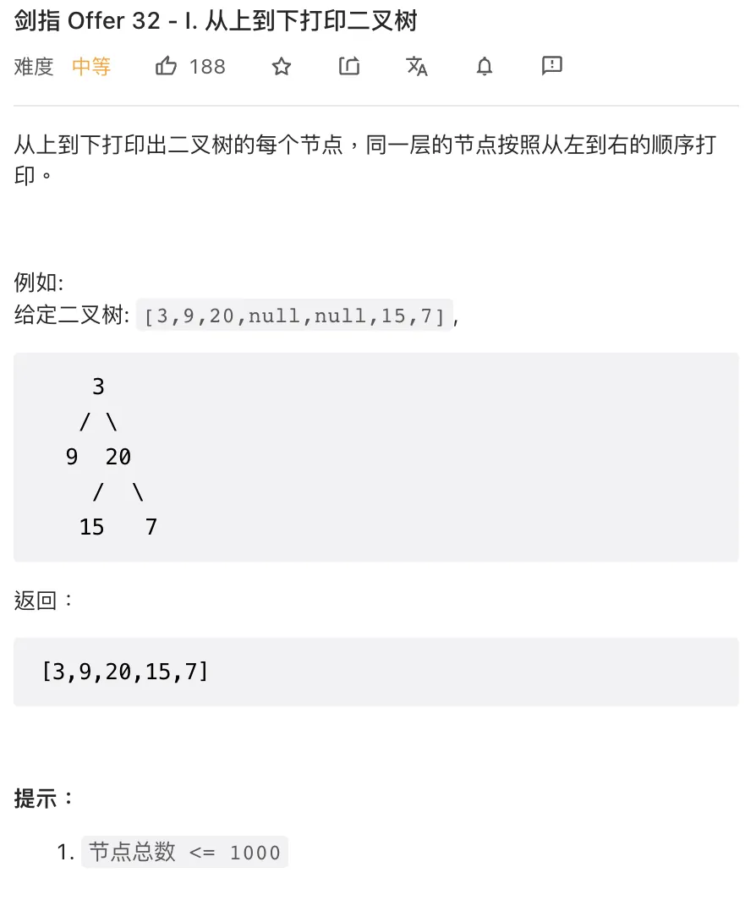

剑指 Offer 32 - I. 从上到下打印二叉树
Question

✍🏽 My Solution
执行用时：1 ms, 在所有 Java 提交中击败了97.87%的用户
内存消耗：41 MB, 在所有 Java 提交中击败了70.73%的用户
class Solution {
public int[] levelOrder(TreeNode root) {
if (root == null) return new int[0];
List<Integer> result = new ArrayList<>();
Queue<TreeNode> queue = new LinkedList<>();
queue.add(root);
while (!(queue.isEmpty())) {
TreeNode node = queue.poll();
result.add(node.val);
if (node.left != null) {
queue.add(node.left);
}
if (node.right != null) {
queue.add(node.right);
}
}
int[] resultArr = new int[result.size()];
for (int i = 0; i < result.size(); i++) {
resultArr[i] = result.get(i);
}
return resultArr;
}
}
🧠 Thought Process
- Why did I choose this particular implementation?
- 題目要求的為由上到下打印（按層），就是所謂的BFS 廣度優先搜索
- 特殊處理：當樹的根節點為空，則返回空陣列 []
- 初始化：結果列表 result 及隊列 queue，隊列將根節點入隊
- 循環：當 queue 為空時跳出
- 出隊：隊首元素出隊，命名為 node
- 打印：將 node 加入 result 尾部
- 添加子節點：若 node 的左(右)節點不為空，將左(右)節點入隊 queue
- 返回值：返回結果陣列
- What is the time/space complexity of my solution? How do I know?
- time: O(n) n 為節點數量
- space: